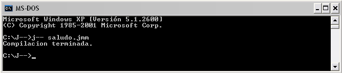
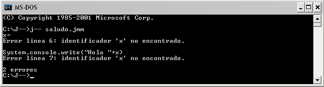
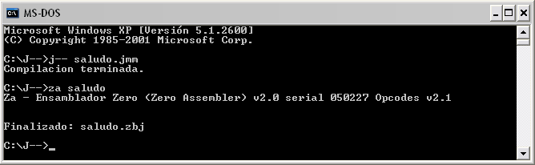
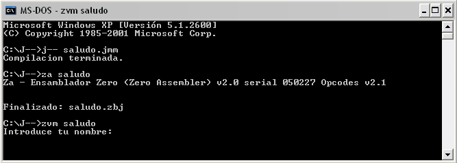
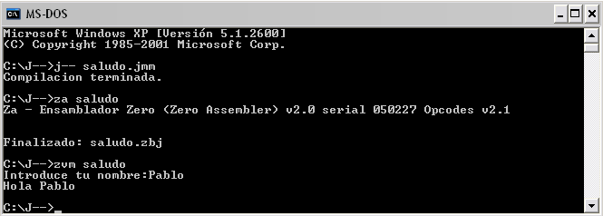

MANUAL del LENGUAJE J--
para Zero
J-- y su documentación fueron desarrollados por Pablo López Martínez
J-- es un lenguaje de programación basado fuertemente en Java, y, por tanto, basado en clases pero generando código para una máquina virtual basada en prototipos.
Lo primero antes de empezar a programar es crear el archivo donde vamos a escribir el código fuente. Este archivo debe ser un fichero de texto y por convenio su extensión debe ser .jmm.
Aunque el compilador j-- acepta cualquier tipo de extensión, es importante utilizar la extensión .jmm para identificar de manera más rápida que ese archivo contiene código j--.
En este apartado veremos los elementos que aporta j-- para escribir un programa. Este apartado es el soporte para el resto de los apartados.
Los caracteres j-- pueden agruparse en letras, dígitos, espacios en blanco, caracteres especiales, signos de puntuación y secuencias de escape.
Estos caracteres son utilizados para formar los números, los identificadores y las palabras claves de j--. Son los siguientes:
Letras mayúsculas del alfabeto inglés:
A B C D E F G H I J K L M N O P Q R S T U V W X Y Z
Letras minúsculas del alfabeto inglés:
a b c d e f g h i j k l m n o p q r s t u v w x y z
Dígitos decimales:
0 1 2 3 4 5 6 7 8 9
Carácter de subrayado “_”
El compilador j-- trata las letras mayúsculas y minúsculas como caracteres diferentes. Por ejemplo los identificadores Pi y PI son diferentes.
Los caracteres espacio en blanco, tabulador horizontal, tabulador vertical, avance de página y nueva línea, son caracteres denominados espacios en blanco, porque la labor que desempeñan es la misma que la del espacio en blanco: actuar como separadores entre los elementos de un programa, lo cual permite escribir programas más legibles. Por ejemplo, el siguiente código:
class persona {public void doIt () {System.console.write (“hola”) ;}}
puede escribirse de una forma más legible así:
class persona {
public void doIt ()
{
System.console.write (“Hola”);
}
}
Los espacios en blanco en exceso son ignorados por el compilador. Según esto, el código siguiente se comporta exactamente igual que el anterior:
class persona {
void doIt ( ){
System.console.write ( “Hola” );
}
}
Este grupo de caracteres se utiliza de diferentes formas; por ejemplo, para especificar una determinada operación aritmética, lógica o de relación. Son los siguientes:
, . ; : “ ( ) { } < ! | / + # % & * - = >
Cualquier carácter de los anteriores puede también ser representado por una sentencia de escape. Una secuencia de escape está formada por el carácter \ seguido de una letra o de una combinación de dígitos. Son utilizadas para acciones como nueva línea y tabulador.
El lenguaje j-- tiene predefinidas las siguientes secuencias de escape:
|
Secuencia |
Nombre |
|
\n \t
|
Ir al principio de la siguiente línea. Tabulador horizontal. |
Veamos la siguiente operación aritmética:
dato1 = 20;
dato2 = 10;
resultado = dato1 + dato2;
Para que el compilador j-- reconozca esta operación es necesario especificar previamente el tipo de cada uno de los operandos que intervienen en la misma, así como el tipo del resultado. Para ello, escribiremos una línea como la siguiente:
int dato1, dato2, resultado;
dato1 = 20;
dato2 = 10;
resultado = dato1 + dato2;
La declaración anterior le indica al compilador j-- que dato1, dato2 y resultado son de tipo entero (int). Observe que se puede declarar más de una variable del mismo tipo utilizando una lista separada por comas.
Se les llama primitivos porque están definidos por el compilador. Hay tres tipos primitivos de datos:
Tipo entero: int
Tipo real: float
Tipo booleano: boolean
int
El tipo int se utiliza para declarar datos enteros. El siguiente ejemplo declara e inicia dos variables de tipo int:
int a = 2999;
int b = -439;
float
El tipo float se utiliza para declarar datos de tipo real. El siguiente ejemplo declara e inicia dos variables float:
float a = 3.1516;
float b = -0.317;
boolean
El tipo boolean se utiliza para declarar datos que indican si algo es verdadero o falso. El siguiente ejemplo declara e inicia dos variables boolean:
boolean a = true;
boolean b = false;
Un literal es la expresión de un valor de un tipo primitivo, o bien de una cadena de caracteres (conjunto de caracteres entre comillas dobles). Por ejemplo, son literales: 5, 3.14, true y “hola”. En realidad son valores constantes.
Según lo expuesto, un literal en j-- puede ser: un entero, un real, un booleano y una cadena de caracteres.
En el lenguaje j-- un literal entero puede llevar signo, en general, el signo + es opcional si el valor es positivo y el signo – estará presente siempre que el valor sea negativo. La sintaxis para especificar un literal entero es:
{[+] | [-]} literal_entero
Un literal real está formado por una parte entera, seguido por un punto decimal, y una parte fraccionaria. El lenguaje j-- no permite utilizar la notación científica.
{[+] | [-]} parte_entera.parte_fraccionaria
Un literal de cadena de caracteres es una secuencia de caracteres encerrados entre comillas dobles. Por ejemplo:
“Esto es una cadena de caracteres.”
“3.1415926”
“” /*Cadena vacía*/
Existen dos literales booleanos:
true: indica que algo es verdadero.
false: indica que algo es falso.
Los identificadores son nombres dados a clases, atributos, métodos y variables de un programa. La sintaxis para formar un identificador es la siguiente:
{letra} [{letra|digito|_}]…
lo cual indica que un identificador consta de uno o más caracteres y que el primer carácter debe ser un letra. No puede comenzar por un dígito ni por un carácter de subrayado ni puede contener caracteres especiales.
Las letras pueden ser mayúsculas o minúsculas. Para j-- una letra mayúscula es un carácter diferente a esa misma letra minúscula. Por ejemplo, los identificadores Suma, suma y SUMA son diferentes.
Los identificadores pueden tener cualquier número de caracteres pero solamente los 99 caracteres primeros son significativos. Esto quiere decir que un identificador es distinto de otro cuando difieren al menos en uno de los 99 primeros caracteres significativos.
Ejemplos de identificadores:
Suma
Calculo_Numeros_Primos
ordenar
VisualizarDatos
Las palabras claves son identificadores predefinidos que tienen significado especial para el compilador j--. Por lo tanto, un identificador definido por el usuario, no puede tener el mismo nombre que una palabra clave. El lenguaje j-- tiene las siguientes palabras clave:
boolean false public
break float return
catch for throw
class if true
continue import try
do int void
else new while
extends private
Las palabras clave deben escribirse siempre en minúsculas, como están.
Un comentario es un mensaje a cualquiera que lea el código fuente. Añadiendo comentarios se hace más fácil la compresión de un programa. La finalidad de los comentarios es explicar el código fuente. J-- soporta dos tipos de comentarios:
Comentario tradicional: Un comentario tradicional empieza con los caracteres /* y finaliza con los caracteres */. Estos comentarios pueden ocupar más de una línea, pero no pueden anidarse, y pueden aparecer en cualquier lugar donde se permita aparecer un espacio en blanco. Por ejemplo:
/*
La ejecución de un programa j-- empieza en el método doIt
definido dentro de la clase principal. Para indicar que una clase es principal esta debe tener el mismo nombre que el fichero de
código fuente y derivar de la clase ConsoleApplication.
*/
Comentario de una sola línea: Este tipo de comentario comienza con una doble barra (//) y se extiende hasta el final de la línea. La siguiente línea muestra un ejemplo:
// Aquí empieza un programa
Una variable representa un espacio de memoria para almacenar un valor de un determinado tipo. El valor de una variable puede cambiar durante la ejecución de un programa. Para utilizar una variable dentro de un método de un programa, primero hay que declararla dentro del mismo. Una variable solo se puede declarar al principio de un método y nunca dentro de un bloque. La declaración de un variable consiste en enunciar el nombre de la misma y asociarle un tipo:
tipo identificador[, identificador]…
En el ejemplo siguiente se declaran e inician tres variables: una de tipo int, otra float y otra boolean.
int i = 0;
float f = 3.56;
boolean d = false;
Una variable puede ser inicializada mediante un literal o mediante una expresión.
Una expresión numérica es un conjunto de operandos unidos mediante operadores para especificar una operación determinada. Ejemplo:
a + 1
suma + c
cantidad * precio
Los operadores son símbolos que indican cómo son manipulados los datos. Se pueden clasificar en los siguientes grupos: aritméticos, relacionales, lógicos, unitarios, de asignación.
Los operadores aritméticos los utilizamos para realizar operaciones matemáticas y son los siguientes:
|
Operador |
Operación |
|
+ - * /
% |
Suma. Los operandos pueden ser enteros o reales. Resta. Los operandos pueden ser enteros o reales. Multiplicación. Los operandos pueden ser enteros o reales. División. Los operandos pueden ser enteros o reales. Si ambos operandos son enteros el resultado es entero sino el resultado es real. Módulo o resto. Los operandos deben ser enteros. |
El siguiente ejemplo muestra cómo utilizar estos operadores. Como se ve en le ejemplo primero debemos declarar las variables y después se realizan las operaciones deseadas con ellas.
int a = 10, b = 3, c;
float x = 2.0, y;
y = x + a; //El resultado es 12.0 de tipo float.
c = a / b; //El resultado es 3 de tipo int.
c = a % b; //El resultado es 1 de tipo int.
y = a / b; //El resultado es 3 de tipo int. Se convierte a float
//para asignarlo a y.
Cuando en una operación aritmética los operandos son diferentes uno de tipo int y otro de tipo float, el de tipo int es convertido a tipo float.
En una asignación si el resultado obtenido es float y la variable a la que se le asigna es int se produce un error, solicitando que se realice la conversión adecuada por pérdida de precisión.
Los operadores de relación o de comparación permiten evaluar la igualdad y la magnitud. El resultado de una operación de relación es un valor booleano verdadero o falso (true o false). Los operadores de relación son los siguientes:
|
Operador |
Operación |
|
<
>
<=
>=
!=
== |
¿Primer operando menor que el segundo? Solo tipos de datos enteros y reales. ¿Primer operando mayor que el segundo? Solo tipos de datos enteros y reales. ¿Primer operando menor o igual que el segundo? Solo tipos de datos enteros y reales. ¿Primer operando mayor o igual que el segundo? Solo tipos de datos enteros y reales. ¿Primer operando distinto que el segundo? Cualquier tipo de datos.
¿Primer operando igual que el segundo? Cualquier tipo de datos. |
Los operadores <, >, <=, >= sólo se pueden utilizar con tipos de datos enteros y reales.
Los operadores ==, != se pueden utilizar con cualquier tipo de datos.
A continuación se muestra un ejemplo del uso de los operadores relacionales:
boolean r;
int x = 10, y=0;
r = x == y; //r = false; porque x no es igual a y.
r = x > y; //r = true; porque x es mayor que y.
r = x != y; //r= true; porque x es distinto de y.
El resultado de una operación lógica es un valor booleano verdadero o falso (true o false). Las expresiones que dan como resultado valores booleanos pueden combinarse para formar expresiones booleanas utilizando los operadores lógicos indicados a continuación. Los operandos deben ser expresiones que den un resultado verdadero o falso.
Los operadores lógicos son los siguientes:
|
Operador |
Operación |
|
&&
| |
! |
AND. Da como resultado verdadero si al evaluar cada uno de los operandos el resultado es verdadero. Si uno de ellos es falso, el resultado es falso.
OR. El resultado es falso si al evaluar cada uno de los operandos el resultado es falso. Si uno de ellos es verdadero, el resultado es verdadero.
NOT. El resultado de aplicar este operador es falso si al evaluar su operando el resultado es verdadero, y verdadero en caso contrario. |
El resultado de una operación lógica es de tipo boolean.
A continuación se muestra un ejemplo del uso de los operadores lógicos.
int p = 10, q = 0;
boolean r;
r = (p != 0) && (q != 0); //r = false;
Los operandos del operador && son: p!=0 y q!=0. El resultado de la expresión p!=0 es verdadero porque p vale 10 y el q!=0 es falso porque q es 0. Por lo tanto, el resultado de verdadero && falso es falso.
Los operadores unitarios se aplican a un solo operando y son los siguientes: !, -, ++, --. El operador ! ya lo hemos visto y los operadores ++ y -- los veremos con los operadores de asignación.
|
Operador |
Operación |
|
-
|
Cambia de signo al operando. El operando debe ser entero o real. |
El siguiente ejemplo muestra cómo utilizar el operador anterior:
int a = 2, b = 0;
b = -a; //resultado b = -2;
El resultado de una operación de asignación es el valor almacenado en el operando izquierdo, lógicamente después de que la asignación se ha realizado. Incluimos aquí los operadores de incremento y decremento porque implícitamente estos operadores realizan una asignación sobre su operando.
|
Operador |
Operación |
|
++ -- = *= /= %= += -= &= |= |
Incremento. Solo se pueden usar como sufijo de una variable. Decremento. Solo se puede usar como sufijo de una variable. Asignación simple. Multiplicación más asignación. División más asignación. Módulo más asignación. Suma más asignación. Resta más asignación. Operación AND más asignación. Operación OR más asignación. |
A continuación se muestran algunos ejemplos con estos operadores:
int x = 0, n = 10, i = 1;
n++; // Incrementa el valor de n en 1.
n--; // Decrementa el valor de n en 1.
x = n++; // Asigna n a x y incrementa n en 1.
x = n--; // Asigna n a x y decrementa n en 1.
i += 2; // Realiza la operación i = i + 2;
x *= n – 3; // Realiza la operación x = x * (n - 3).
El operador de incremento incrementa su operando siempre en una unidad y solamente se puede usar como sufijo. Ídem para el operador de decremento.
El operador + también se puede usar si los operandos son cadenas de caracteres y lo que hace es concatenarlas.
Operador Coma
La coma se utiliza para encadenar varias operaciones, las cuales se ejecutarán de izquierda a derecha. Su uso más común es en la sentencia for que veremos más adelante.
Ejemplos:
for (a = 256, b = 1;b < 512; a/=2, b*=2) {
// más cosas ...
}
Operador new
El operador new sirve para crear una copia de un objeto ya existente en el programa o en una librería. En Java no se crean copias sino que se crea una instancia de una clase, en j-- cuando creamos una clase estamos creando un objeto listo para usarse y si necesitamos otro simplemente tenemos que utilizar el operador new para crear una copia.
Ejemplo:
Vector x;
x = new Vector ( );
Con esta sentencia creamos una copia del objeto Vector que se encuentra en la librería estándar de j--.
Cuando escribimos una expresión como la siguiente, f = a + b * c / d, es porque conocemos perfectamente el orden en el que se ejecutan las operaciones. Si este orden no fuera el que esperamos, tendríamos que utilizar paréntesis para modificarlo, ya que una expresión entre paréntesis, siempre se evalúa primero.
Esto quiere decir que el compilador j—atribuye a cada operador un nivel de prioridad; de esta forma puede resolver qué operación se ejecuta antes que otra en una expresión. Esta prioridad puede ser modificada utilizando paréntesis. Los paréntesis tienen mayor prioridad y son evaluados de más internos a más externos.
La tabla que se presenta a continuación, resume las reglas de prioridad y asociatividad de todos los operadores. Las línea se han colocado de mayor a menor prioridad. Los operadores escritos sobre una misma línea tienen la misma prioridad.
|
Operador |
Asociatividad |
|
( ) - ! ++ -- * / % + - == != && || = *= /= %= += -= &= |= |
izquierda a derecha derecha a izquierda izquierda a derecha izquierda a derecha izquierda a derecha izquierda a derecha izquierda a derecha derecha a izquierda |
La única conversión que hace implícitamente el compilador j-- es de int a float. Cuando en una expresión existen operandos de tipo float e int el compilador convierte directamente los operandos de tipo int a tipo float.
En una asignación, si la variable a la que se asigna es de tipo float y el valor asignado es de tipo int, el valor asignado es convertido automáticamente a float.
Las sentencias de control nos sirven para crear repeticiones y decisiones. Los tipos de sentencias de control son:
Una sentencia if permite tomar decisiones para ejecutar una acción u otra, basándose en el resultado verdadero o falso de un expresión. Una sentencia if puede ir acompañado de la sentencia else o solo. La sentencia else significa que si no se cumple la condición de la sentencia if se ejecuta la sentencia else. La sentencia if se puede anidar.
A continuación se muestran ejemplos de sentencias if:
if (condicion1) {
if (condicion2)
sentencia1;
sentencia2;
}
else {
if (condicion3) {
sentencia2.2;
sentencia2.3;
}
else expresion1;
}
En el ejemplo anterior condición es una expresión booleana, sentencia1 es una sentencia simple y sentencia2.2, sentencia2.3 representan una sentencia compuesta que debe ir entre { }.
Ejecuta una sentencia, simple o compuesta, cero o más veces, dependiendo del valor de una expresión booleana. Su sintaxis es la siguiente:
while (condición)
sentencia;
En la sentencia anterior condición es cualquier expresión booleana y sentencia es una sentencia simple o compuesta.
Se permite el anidamiento de bucles while, for o do unos dentro de otros.
Un bucle do…while ejecuta una sentencia simple o compuesta, una o más veces dependiendo del valor de una expresión. Su sintaxis es la siguiente:
do
sentencia;
while (condición);
En la sentencia anterior condición es cualquier expresión booleana y sentencia es una sentencia simple o compuesta. La estructura do…while finaliza con un punto y coma.
Cuando se utiliza una estructura do…while el bloque de sentencias se ejecuta al menos una vez, porque la condición se evalúa al final, por lo que se suele utilizar para procesar la selección de menús.
La sentencia for permite ejecutar una sentencia simple o compuesta, repetidamente un número de veces conocido. Su sintaxis es la siguiente:
for ([v1 = e1 [, v2 = e2]…]; [condición]; [iteración])
En la sentencia anterior:
v1, v2,…, representan variables de control que serán inicializadas con los valores de las expresiones e1, e2,…,; La parte de inicialización solo se ejecutará al comienzo del bucle. En esta parte no se puede declarar una variable nueva.
condición es una expresión booleana que si se omite se supone verdadera (bucle infinito).
iteración es una o más expresiones separadas por comas, cuyos valores evolucionan en el sentido de que se cumpla la condición para finalizar la ejecución de la sentencia for. Se puede hacer referencia a cualquier variable, aunque no forme parte de la condición del bucle for.
sentencia es una sentencia simple o compuesta.
La sentencia break se utiliza para finalizar la ejecución de un bucle while, do o for. Cuando los bucles están anidados, la sentencia break solamente finaliza la ejecución del bucle donde esté incluida.
int x, i;
for (i = 0; i < 10; i++) {
int x = 0;
while (x < 5) {
System.console.write ( “El valor de x es ”+ x.toString() );
if (i == 3)
break;
x++;
}
}
La sentencia continue obliga a ejecutar la siguiente iteración del bucle while, do o for.
int i;
for (i = 0; i < 10; i++) {
if (i == 3)
continue;
System.console.write(“El valor de i es: “+ i.toString());
}
Si durante la ejecución de un programa ocurre un error que impide su continuación (división por cero,…), la máquina virtual ZERO lanza una excepción que hace que se visualice un mensaje acerca de lo ocurrido y se detenga la ejecución del programa.
Si no deseamos que esto ocurra, el programa debe capturar la excepción y tratarla él mismo. Para ello se encierra el bloque de sentencias que pueden lanzar la excepción en un bloque try, y se proporciona un bloque catch que se encarga de gestionarla.
La sintaxis de este tipo de sentencias es la siguiente:
try{
//bloque de código
}
catch (TipoExcepcion ex){
//gestor de excepciones para TipoExcepcion.
}
Utilizando la sentencia throw es posible hacer que un programa lance una excepción de manera explícita. El flujo de la ejecución se detiene inmediatamente después de la sentencia throw y cualquier sentencia posterior no se ejecuta. La forma general de esta sentencia es la siguiente:
throw TipoExcepcion;
Toda aplicación escrita en j-- contiene al menos una clase y esta clase debe contener al menos un método llamado doIt. Si lo que vamos a construir es una librería no es necesario que exista el método doIt.
Al principio del archivo en código j-- podemos hacer uso de librerías de código j-- utilizando la sentencia import.
La sentencia import se utiliza al principio de un fichero en código j-- y sirve para que un programa pueda hacer uso de una librería externa de objetos j--. Por defecto siempre se importa la librería estándar IntStdLib.def.
La sintaxis de la sentencia import es:
#import <nombre_libreria.def>
Una clase es un tipo definido por el usuario que describe los atributos y métodos que contendrá el objeto.
Una clase es principal, cuando su nombre coincide con el nombre del archivo de código j--. Si el archivo es una aplicación está clase deberá derivar obligatoriamente de ConsoleApplication y contener un método doIt que iniciará la ejecución de la aplicación.
Una clase por defecto hereda siempre de Object, si además queremos que herede de otra debemos utilizar extends. Como vimos anteriormente la clase principal de la aplicación debe heredar siempre de ConsoleApplication.
Ejemplo:
class vehiculo{
int numeroRuedas;
String tipoCombustible;
}
class coche extends vehiculo{
String color;
}
class camion extends vehiculo{
int cargaMaxima;
}
Como se observa en el anterior ejemplo la clase más arriba en la herencia siempre debe ser la primera en escribirse.
Los atributos definen el estado de un determinado objeto.
Un atributo puede ser inicializado si es del tipo int, float o String, en caso de no inicializarse los atributos con tipos anteriores, el compilador inicializa automáticamente los atributos de tipo int a 0, los de tipo float a 0.0 y los de tipo String a “”(cadena vacía).
Al resto de los atributos se les asigna un enlace al objeto de su tipo, esto se hace porque siempre existe un objeto de cada tipo y no es necesario crear el objeto antes de usarse.
Ejemplo:
class prueba{
Vector x;
void doIt(){
int num=3;
x.add(num);
}
}
Como se muestra en el ejemplo anterior el atributo de tipo Vector x no seria necesario inicializarlo porque ya contiene una referencia al objeto Vector y por lo tanto ya se podría enviar mensajes sin problema.
Los métodos son las operaciones que definen el comportamiento de un objeto.
La sintaxis de declaración de un método es la siguiente:
Tipo_Retorno nombre_Metodo ( Parametros){
Sentencias;
}
El tipo retorno se refiere al tipo de dato que devolverá el método, este tipo puede ser cualquiera de los existentes y en caso de que no devuelva nada el tipo será void.
Parametros indica los argumentos que se pasaran al método cuando se haga una llamada. Un parametro debe tener la siguiente forma:
Tipo_Parametro nombreParametro,…
Un método puede contener 0 o más parametros, si contiene más de un parametro estos se separan por coma.
La clase principal contiene siempre el método principal doIt, este método debe tener su tipo retorno siempre especificado a void y no recibir parametros.
Un método contiene sentencias, existen dos tipos de sentencias:
Sentencia simple: es la unidad ejecutable más pequeña de un programa j--. Una sentencia j-- puede formarse a partir de: una palabra clave, expresiones, declaraciones o llamadas a métodos. Cuando se escribe una sentencia hay que tener en cuenta las siguientes consideraciones:
Toda sentencia simple termina con un punto y coma (;).
Dos o más sentencias simples pueden aparecer sobre una misma línea separadas por un punto y coma (;).
Una sentencia nula consta simplemente de un punto y coma (;).
Sentencia compuesta o bloque: es una colección de sentencias simples incluidas entre llaves { }. Un bloque puede contener otro bloque.
Para controlar el acceso a los miembros de una clase, j-- proporciona las palabras clave private y public, denominados modificadores de acceso, aunque también se pueden omitir.
Los modificadores de acceso se utilizan para indicar el tipo de acceso permitido a cada miembro (atributo o método) de una clase.
Acceso público
Cuando se omite o se usa la palabra clave public, indica que ese miembro es accesible para cualquier otra clase.
Acceso privado
Cuando se utiliza la palabra clave private, indica que ese miembro sólo es accesible por su misma clase.
En java también se acepta protected pero en el lenguaje j-- protected no es aceptado. El lenguaje j-- solo acepta public y private.
A continuación vamos a mostrar algunos objetos y sus miembros contenidos en la librería estándar y que son interesantes para la creación de un programa en j--.
DefaultConsole: Proporciona la funcionalidad que tiene que ver con la consola estándar. Debe emplearse a través del atributo console en System.
Sus métodos son los siguientes:
open(): Prepara la consola para ser utilizada. No devuelve nada.
write(): Visualiza un objeto por consola. Si el objeto no es una cadena, llama a su método toString(). No devuelve nada.
read(): Lee una cadena de la consola, la cual devuelve.
close(): Cierra la consola. No devuelve nada.
System: Proporciona la funcionalidad que tiene que ver con la comunicación con la plataforma subyacente.
Sus atributos son los siguientes:
console: Apunta al objeto DefaultConsole.
Sus métodos son los siguientes:
getHiVersionNumber(): Devuelve el número principal de la versión del bytecode empleado.
getLoVersionNumber(): Devuelve la subversión del bytecode empleado.
getLoPlatformCode(): Puede devolver, como mínimo, cuatro valores:
0. Intel
1. Sparc
98. No especificado
99. Otro
getHiPlatformCode(): Puede devolver, como mínimo, cuatro valores:
0. Linux / Unix
1. Windows
98. No especificado
99. Otro
getPlatformName(): Devuelve una cadena compuesta del nombre del procesador, una barra inclinada hacia la derecha, y el nombre del sistema operativo.
getCurrentTime(): Devuelve la fecha y la hora del sistema en un objeto Time.
Time: Proporciona la posibilidad de manejar fecha y hora, en un solo objeto.
Sus atributos son:
instantInDay: Guarda la hora, en segundos, del instante almacenado.
year: Guarda el año de la fecha del instante almacenado.
month: Guarda el mes de la fecha del instante almacenado.
day: Guarda el día de la fecha del instante almacenado.
Sus métodos son los siguientes:
toString(): Devuelve el instante almacenado como una cadena de texto.
getInstantInDay(): Devuelve la hora del instante almacenado, en segundos desde las doce de la madrugada.
putInstantInDay(int s, int m, int h): Devuelve el tiempo, en segundos, al convertir los tres parámetros, h(hora), m(minutos), y s(segundos), en segundos desde las doce de la madrugada, 0:00 a.m. Además, almacena ese valor en el atributo instantInDay.
putDate(int y, int m, int d): Acepta la fecha, almacenado los tres parámetros en sus respectivos atributos: y(año), m(mes), y d(día del mes).
isValidDate(): Devuelve true or false según si la fecha almacenada es válida.
isValidInstant(): Devuelve true or false según si la hora almacenada es válida.
isValid(): Devuelve true si ambas llamadas a isValidInstant() e isValidDate() devuelven true. false en cualquier otro caso.
isLeapYear(): Devuelve true o false según si el año almacenado en esta fecha es bisiesto o no.
getDaysOfMonth(): Devuelve el número de días en el mes de la fecha almacenada.
getHour(): Devuelve la hora almacenada en instantInDay.
getMinute(): Devuelve el minuto de la hora almacenada en instantInDay.
getSecond(): Devuelve los segundos de la hora almacenada en instantInDay.
Float: Es un objeto que siempre está presente, y que proporciona la funcionalidad de los números flotantes en Zero. Se trata de una interfaz que define las operaciones mínimas.
Sus métodos son los siguientes:
zero(): Devuelve un nuevo objeto con el valor en punto flotante del cero.
multiplyBy(float x): Devuelve un nuevo objeto con el valor de multiplicar el valor del objeto al que se le manda el mensaje, por el valor del objeto pasado como parámetro.
divideBy(float x): Devuelve un nuevo objeto con el valor de dividir el valor del objeto al que se le manda el mensaje, por el valor del objeto pasado como parámetro.
sum(float x): Devuelve un nuevo objeto con el valor de sumar el valor del objeto al que se le manda el mensaje, con el valor del objeto pasado como parámetro.
substract(float x): Devuelve un nuevo objeto con el valor de restar del valor del objeto al que se le manda el mensaje, con el valor del objeto pasado como parámetro.
abs(): Devuelve un nuevo objeto con el valor absoluto del valor contenido en el objeto.
parseString(String x): Devuelve un objeto conteniendo un número flotante que es interpretado del String pasado como argumento.
toString(): Convierte el número a una cadena, devolviendo ésta como un nuevo objeto.
toInt(): Convierte el número flotante a un número entero, devolviendo ésta como un nuevo objeto.
isEqualTo(float x): Devuelve true o false dependiendo de si el valor del objeto al que se le manda el mensaje es igual o no al valor del objeto pasado como parámetro.
isLessThan(float x): Devuelve true o false dependiendo de si el valor del objeto al que se le manda el mensaje es menor o no al valor del objeto pasado como parámetro.
Int: Es un objeto que siempre está presente, y que proporciona al funcionalidad de los números enteros.
Sus métodos son los siguientes:
zero(): Devuelve un nuevo objeto con el valor entero del cero.
multiplyBy(int x): Devuelve un nuevo objeto con el valor de multiplicar el valor del objeto al que se le manda el mensaje, por el valor del objeto pasado como parámetro.
divideBy(int x): Devuelve un nuevo objeto con el valor de dividir el valor del objeto al que se le manda el mensaje, por el valor del objeto pasado como parámetro.
sum(int x): Devuelve un nuevo objeto con el valor de sumar el valor del objeto al que se le manda el mensaje, con el valor del objeto pasado como parámetro.
substract(int x): Devuelve un nuevo objeto con el valor de restar del valor del objeto al que se le manda el mensaje, el valor del objeto pasado como parámetro.
abs(): Devuelve un nuevo objeto con el valor absoluto del valor contenido en el objeto.
parseString(String x): Devuelve un objeto conteniendo un número entero que es interpretado de la cadena pasada como argumento.
toString(): Convierte el número a una cadena, devolviendo ésta como un nuevo objeto.
toFloat(): Convierte el número entero a un número flotante, devolviendo éste como un nuevo objeto.
isEqualTo(int x): Devuelve true o false dependiendo de si el valor del objeto al que se le manda el mensaje es igual o no al valor del objeto pasado como parámetro.
isLessThan(int x): Devuelve true o false dependiendo de si el valor del objeto al que se le manda el mensaje es menor o no al valor del objeto pasado como parámetro.
String: Permite manejar cadenas de texto.
Sus métodos son:
left(int x): Devuelve un nuevo objeto String, con los caracteres desde la posición cero, hasta la posición indicada por el argumento, tomados desde la izquierda.
right(int x): Devuelve un nuevo objeto String, con los caracteres desde la posición cero hasta la indicada por el argumento, tomados desde la derecha.
sub(int begin, int end): Devuelve un nuevo objeto String con una subcadena formada por los caracteres desde la posición begin hasta la posición end, pasados como argumentos como int.
empty(): Devuelve true si la cadena es vacía, no contiene caracteres. false en otro caso.
length(): Devuelve un número entero como objeto int, reflejando el número de caracteres en la cadena.
toString(): Se devuelve a sí mismo, no como un nuevo objeto.
Map: Es un objeto que siempre está presente, y que proporciona la funcionalidad de los vectores asociativos. El índice de estos vectores asociativos siempre es una cadena.
Sus métodos son los siguientes:
add(String x, Object o): Añade un nuevo elemento al vector asociativo. La cadena consiste en el índice, mientras que el objeto pasado es el elemento en si.
size(): Devuelve el número de elementos en el objeto Map.
modify(String x, Object o): Modifica un elemento introducido previamente. En realidad, consiste en dos llamadas consecutivas, una a delete(), y otra a add().
lookUp(String x): Devuelve el objeto guardado previamente, buscando por su índice.
delete(String x): Elimina un elemento introducido previamente, buscando por su índice.
toString(): Devuelve una cadena compuesta de todas las subcadenas obtenidas invocando el método toString() de cada uno de los elementos del objeto Map.
Vector: Es un objeto que siempre está presente, y que proporciona la funcionalidad de los vectores.
Sus métodos son los siguientes:
add(Object o): Añade un objeto al final del Vector.
size(): Devuelve el número de elementos en el objeto Vector.
get(int x): Devuelve el objeto en la posición contenido en el objeto int pasado como parametro.
put(int x, Object o): Modifica el objeto en la posición contenido en el objeto int pasado como parámetro, con el nuevo objeto.
Modify(int x, Object o): Igual que put.
delete(int x): Elimina la posición contenida en el objeto int pasado como parámetro.
insert(int x, Object o): Inserta un Nuevo objeto en la posición contenida en el objeto int pasado por parámetro. Esto supone desplazar todos los elementos a la derecha del nuevo elemento una posición.
erase(int x): Elimina la posición contenida en el objeto int pasado por parámetro. Esto supone desplazar todos los elementos a la derecha del elemento una posición a la izquierda.
clear(): Elimina todas las posiciones del Vector.
seqFind(Object o): Realiza una búsqueda secuencial por el Vector, empezando desde la posición 0 y hasta la última, o hasta que el objeto es encontrado. Esto se hace ejecutando el método isEqualTo() para cada elemento, pasándole el objeto a buscar como parámetro. Devuelve el número de posición si encuentra el objeto.
seqFindLast(Object o): Realiza una búsqueda secuencial por el Vector, empezando desde la última posición hasta la primera, o hasta que el objeto es encontrado. Esto se hace ejecutando el método isEqualTo() para cada elemento, pasándole le objeto a buscar como parámetro. Devuelve el número de posición si encuentra el objeto.
toString():Devuelve una cadena compuesta de todas las subcadenas obtenidas invocando el método toString() de cada uno de los elementos del objeto Vector.
isEqualTo(Vector v): Devuelve true si los vectores tienen la misma longitud, y si la invocación del método isEqualTo() para todos y cada un de los elementos de un Vector, pasando como parámetro al elemento en la misma posición que en el otro, devuelve true. En caso contrario devuelve false.
Exception: Cuando se lanza una excepción, el objeto enviado es una copia de uno de los objetos que derivan de éste.
Sus métodos son:
toString(): Llama al método getErrorMessage() y devuelve un String.
getErrorMessage(): Compone un mensaje de error con toda la información en el objeto.
De exception heredan las siguientes excepciones:
ESemantic: Cuando se lanza una excepción que tiene que ver con errores semánticos en la ejecución de un método. De esta a su vez heredan:
EVisibility: Cuando se lanza una excepción que tiene que ver con los tipos de acceso de los métodos y atributos. De esta a su vez hereda:
EPrivate: Cuando se lanza una excepción producida por un atributo privado.
ETypeMismatch: Este objeto es enviado cuando ocurre algún problema relacionado con que un objeto no deriva del objeto que se esperaba.
EObjectNotFound: Este objeto es enviado cuando ocurre algún problema relacionado con encontrar un objeto.
EMethodNotFound: Este objeto es enviado cuando ocurre algún problema relacionado con encontrar un método en un objeto.
EConditional: Este objeto es enviado cuando ocurre algún problema con una estructura de toma de decisiones.
EInternalError: Este objeto se genera cuando ocurre algún error que no se encuadra en ninguna categoría.
EMath: Este objeto se genera cuando ocurre algún error relacionado con el cálculo.
EMemory: Cuando se lanza una excepción, y ésta tiene que ver con la gestión de memoria. De esta a su vez heredan:
ENotEnoughMemory: Este objeto se genera cuando ocurre algún error relacionado con la memoria. Por ejemplo, podría ocurrir cuando se ejecuta el operador new y no hay suficiente memoria para crear la copia del objeto especificado.
EAccessViolation: Este objeto se genera cuando se intenta acceder a alguna parte de la memoria con privilegios inadecuados.
EUser: Cuando se lanza una excepción, y ésta tiene que ver con errores definidos por el usuario. De esta a su vez hereda:
EInputOutput: Este objeto se genera cuando se produce algún problema de entrada/salida.
Una vez visto como debemos crear un programa, el siguiente paso es ver como podemos compilarlo y ejecutarlo.
Vamos a tomar como ejemplo e siguiente programa que pide el nombre por pantalla y saluda.
El código estará guardado en un fichero con nombre saludo.jmm.
class saludo extends ConsoleApplication{
void doIt(){
String x;
System.console.write(“Introduce tu nombre:”);
x = System.console.read();
System.console.write(“Hola “+ x);
System.console.lf();
}
}
Una vez creado el archivo de código fuente procedemos a compilarlo:

Como vemos en la imagen anterior el comando para compilar el programa es j-- saludo.jmm y comprobamos que no se produzca ningún error.
En la siguiente imagen mostramos lo que sucedería si no definimos la variable String x.

Como vemos en la imagen al no declarar la variable String x se producen dos errores de identificador no encontrado, y también se muestra la línea en la que se produce.
Una vez compilado el programa sin errores vamos a ejecutarlo, el primer paso que debemos dar es:
Ejecutar el comando za sobre el archivo de código ensamblador que generó el compilador j--. Este archivo tiene el mismo nombre que el archivo de código fuente pero sin la extensión. En la siguiente imagen se muestra la ejecución del comando za.

Vemos que el comando za genera un archivo con el nombre saludo.zbj. Este archivo contiene los objetos necesarios para ejecutar la aplicación sobre la máquina virtual ZERO.
El siguiente y último paso es ejecutar la aplicación sobre la máquina virtual ZERO. Para ejecutar la aplicación se usa el comando zvm más el nombre del archivo generado anteriormente pero sin la extensión, en nuestro caso el comando es zvm saludo. La siguiente imagen muestra su ejecución:

Estos tres pasos pueden reducirse a tan solo dos, si se utiliza el lanzador jmc. Este programa llama al compilador de j-- y después ensambla el resultado con za.
Al empezar la ejecución del programa, lo primero que nos pide es que introduzcamos el nombre. Por lo que introducimos el nombre y pulsamos INTRO.
